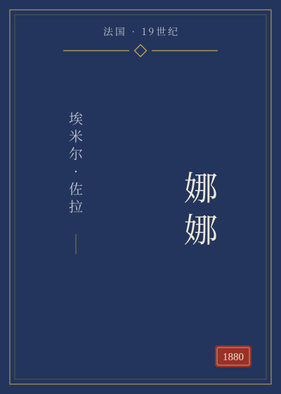
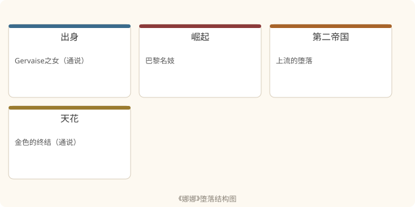

娜娜
一、基本信息
| 作者 | 埃米尔·佐拉 |
|---|---|
| 成书/出版 | 出版年份待核（Britannica B315：Nana 在 Notable Works 列表——1880年说通说待核） Eugene ONeill — Encyclopaedia Britannica（百科全书） |
| 国别/地区 | 法国 |
| 时代 | 近代 · 19世纪 |
| 体裁 | 长篇小说 |
| 语言 | 法语 |

《娜娜》堕落结构图（主题·结构图）
二、创作背景
作者页（B315）：佐拉为'20-novel Rougon-Macquart cycle'作者；Nana 列入 Notable Works。
与《萌芽》同属 Rougon-Macquart 系列（B315：Zola conceived in 1868 a large-scale series similar to Balzac's La Comédie humaine）。
题材（通说待核）：娜娜为《小酒店》中 Gervaise 之女——第二帝国上流社会的堕落。
三、内容脉络
娜娜从底层崛起为巴黎名妓——'how Nana is connected to Gervaise Macquart'（B315 问答）。
结局：死于天花——'金色messalina'的陨落（通说待核）。
四、主要人物表
| 人物 | 身份 | 说明 |
|---|---|---|
| 娜娜 | 名妓 | Gervaise 之女（通说待核） |
五、主题与艺术特点
- 第二帝国的堕落（通说）。
- 女性身体的商品化（通说待核）。
- 自然主义的遗传与社会决定论（B315 语境）。
六、影响与评论
- Britannica：Rougon-Macquart 系列——Zola conceived in 1868 a large-scale series similar to Balzac's La Comédie humaine（B315）。
Eugene ONeill — Encyclopaedia Britannica（百科全书） - Britannica：佐拉为自然主义创始人（B315 作者级定位）。
Eugene ONeill — Encyclopaedia Britannica（百科全书）
七、阅读建议
难点
- 第二帝国政治史。
- 自然主义细节。
- 《娜娜》（人民文学出版社，通说待核）。
- 法文原版（公有领域）。
Rougon-Macquart 系列之一（可在《萌芽》前后阅读）。
八、待核实
- 1880年出版（Charpentier说）核对。
- 娜娜/萨丹人名核对。
- 与《小酒店》（Gervaise）的母女关系核对。
本页主要来源
埃米尔·佐拉的其他收录作品：萌芽